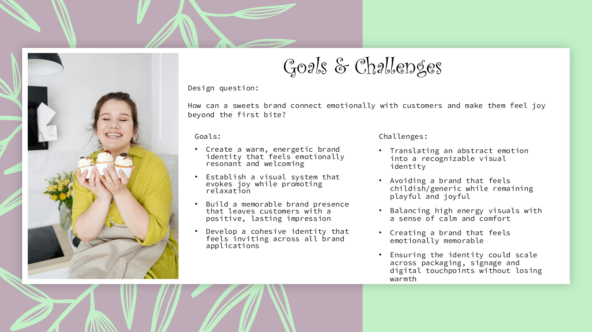
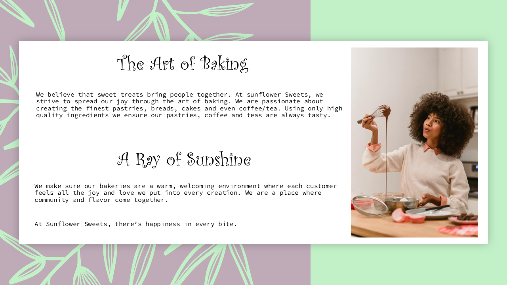
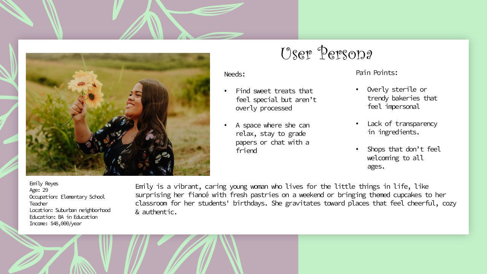
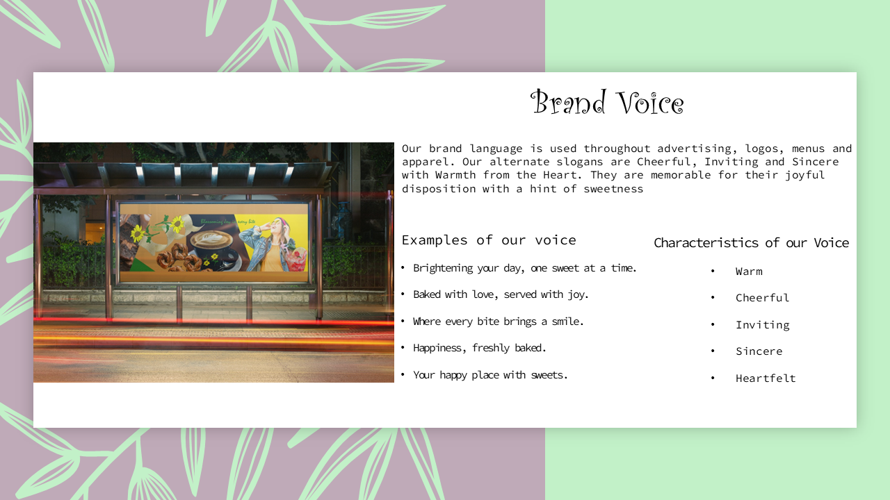
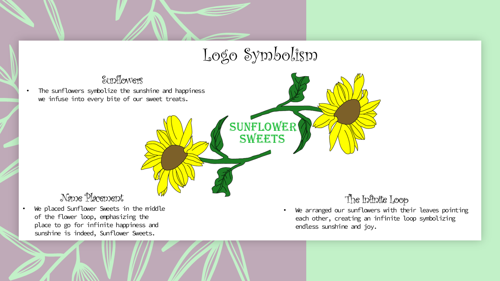
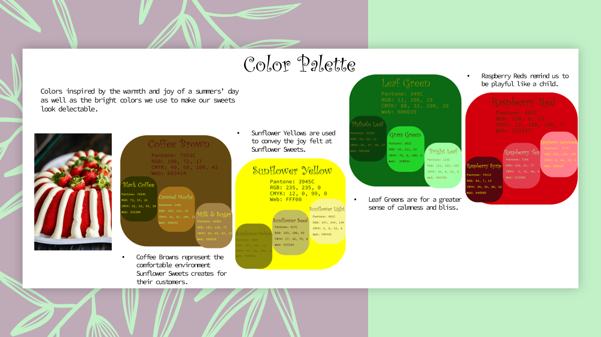

OVERVIEW
Sunflower Sweets is a bakery brand designed to radiate warmth, positivity and playful charm.
OBJECTIVE
Logo design, Brand Voice, Brand Identity, Concept Design for future Website/App
Company
Freelance
Role
Brand Designer
Tools Used
Adobe Illustrator, Photoshop


Audience & Voice
The brand voice was crafted to mirror the emotions and values of its audience, turning everyday sweets into moments of joy.


Visual Identity
The visual identity expresses Sunflower Sweets' core values through color, typography, imagery and symbolism to create a joyful, emotionally resonant brand experience.
Logo Development
This is the process of creating a logo that reflects the warm and inviting atmosphere of Sunflower Sweets.
The logo started out as a sketch of a sunflower with the "Sunflower Sweets" to its right.
.jpg)
I then made the sunflower digital and made the decision that the sunflower needed to be more dynamic. I mirrored and fliped the sunflower and put it to the right of the original sunflower.
.png)
I then realized that the sunflowers had the potential to form an infinite loop. I rotated the the sunflowers around the "Sunflower Sweets" name making the leaves from an unclosed circle.



How to use our color palette
Our color vibrant color palette is representative of the warmth and joy felt when walking into one of our bakeries, taking that first bite of a pastry or first sip of coffee or tea. Below is how to use our colors effectively.